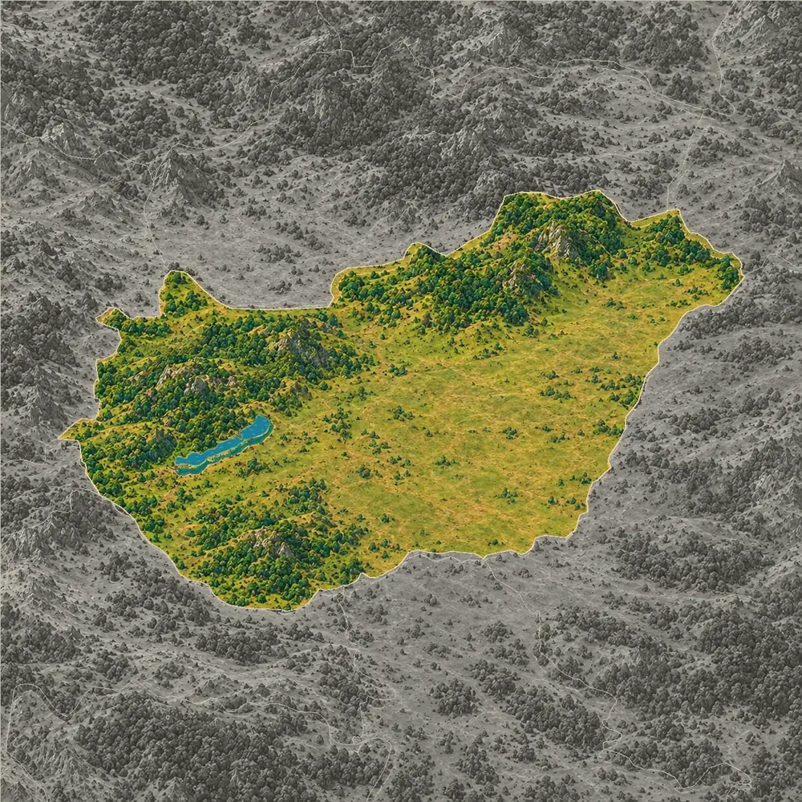
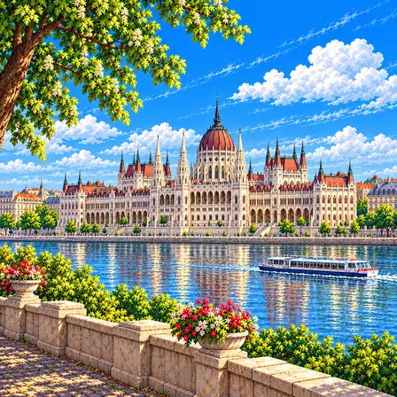
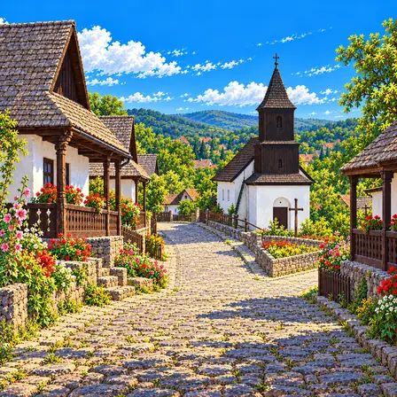
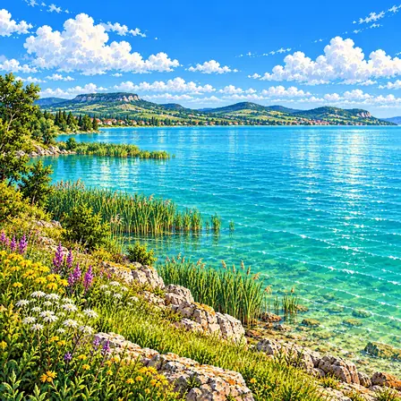
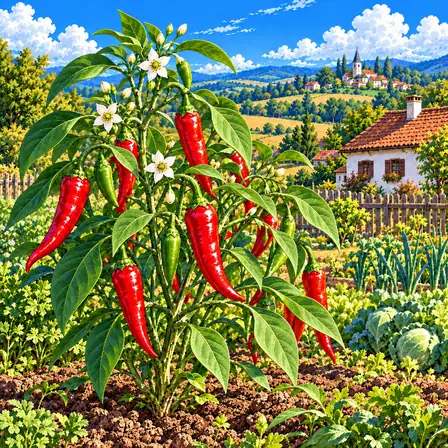
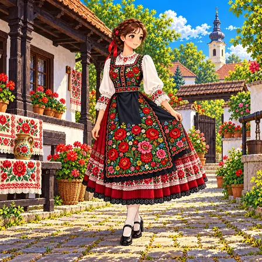
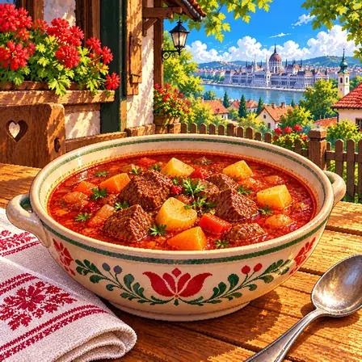
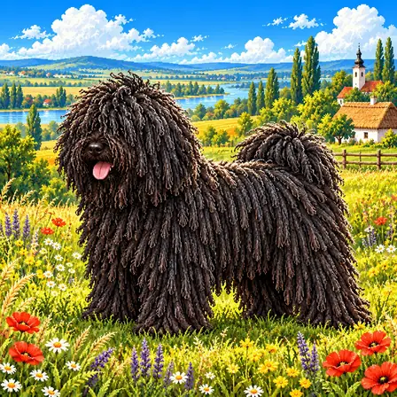

나라의 절반이 넘는 대평원
헝가리 남쪽과 동쪽은 대평원(얼푈드)이라는 낮고 평평한 땅으로, 나라 넓이의 절반이 넘어요. 동쪽의 호르토바지에는 풀밭이 끝없이 이어지는 초원(푸스타)이 남아 있고, 양과 소를 기르는 오랜 목축 생활과 함께 유네스코 세계유산이 됐어요.
출처: Hungarian Tourism Agency, Geography of Hungary · UNESCO, Hortobágy National Park - the Puszta

헝가리는 바다가 없고, 땅의 절반 넘게가 낮고 평평한 들판이에요. 북쪽과 서쪽에는 숲이 덮인 낮은 산이 있어요. 서쪽에는 중부 유럽에서 가장 큰 호수인 벌러톤이 있어요.
헝가리는 높은 산맥에 둘러싸인 커다란 분지 한가운데에 있어요. 남쪽과 동쪽은 대평원, 북쪽은 북부 산지, 서쪽은 트란스다누비아 산지와 벌러톤 호수로 나뉘어요.
헝가리 남쪽과 동쪽은 대평원(얼푈드)이라는 낮고 평평한 땅으로, 나라 넓이의 절반이 넘어요. 동쪽의 호르토바지에는 풀밭이 끝없이 이어지는 초원(푸스타)이 남아 있고, 양과 소를 기르는 오랜 목축 생활과 함께 유네스코 세계유산이 됐어요.
출처: Hungarian Tourism Agency, Geography of Hungary · UNESCO, Hortobágy National Park - the Puszta
북쪽에는 숲이 덮인 북부 산지가 이어지고, 그 가운데 마트러 산지의 케케시(1,014m)가 헝가리에서 가장 높은 곳이에요. 서쪽에는 트란스다누비아 산지와 그 남쪽의 부드러운 언덕이 있어, 땅 대부분은 해발 300m보다 낮아요.
출처: Hungarian Tourism Agency, Geography of Hungary · European Space Agency, Hungary
서쪽의 벌러톤 호수는 넓이가 약 590km²로 중부 유럽에서 가장 큰 호수예요. 서쪽 끝으로 들어오는 절러강이 물을 대고, 평균 깊이가 3m 정도로 얕아요. 물가의 갈대밭과 습지는 물새가 쉬어 가는 람사르 습지로 보호받아요.
출처: European Space Agency, Hungary · Ramsar Convention, Lake Balaton (Ramsar Site 421)
바다가 없는 헝가리를 도나우강이 북쪽에서 남쪽으로 가로질러 흘러요. 벌러톤 호수의 물도 동쪽 끝에서 시오 운하를 따라 빠져나가 도나우강으로 들어가요. 강가의 수도 부다페스트는 땅속에서 솟는 따뜻한 온천이 많아 '온천의 도시'라고 불려요.
헝가리는 알프스와 카르파티아산맥에 둘러싸인 판노니아 분지 안에 있어요. 이곳은 땅껍질(지각)이 늘어나 얇아지면서 내려앉은 곳이라 두께가 약 25km밖에 안 되고, 그래서 땅속 열이 잘 올라와 따뜻한 지하수와 온천이 많아요.
벌러톤 호수 북쪽 터폴처 분지에는 굳은 용암이 아래 땅을 덮어 깎이지 않고 남은, 꼭대기가 평평한 옛 화산 언덕들이 솟아 있어요. 북동쪽 어그텔레크에는 빗물이 석회암을 녹여 만든 동굴이 이웃 슬로바키아와 합쳐 712개나 있어 세계유산이 됐어요.
출처: UNESCO, Tapolca Basin, Tihany Peninsula and Káli Basin (Tentative List) · UNESCO, Caves of Aggtelek Karst and Slovak Karst
헝가리에서 잘 알려진 도시, 역사유산, 자연, 식물, 문화, 음식, 동물, 인사말, 국기를 한 장씩 그렸어요.

부다페스트는 헝가리의 수도예요. 도나우강 양쪽에 도시가 펼쳐져 있어요. 강가에 뾰족한 탑과 둥근 지붕을 가진 커다란 국회의사당이 있어요.
부다페스트는 도나우강을 사이에 두고 언덕이 많은 서쪽 부다와 평평한 동쪽 페슈트가 마주 보는 헝가리의 수도예요. 강을 건너는 길목이자 배가 오가는 물길이어서 일찍부터 사람과 물건이 모였고, 1873년에 부다·페슈트·오부다가 합쳐져 하나의 도시가 됐어요. 페슈트 쪽 강가에 선 국회의사당은 길이가 268m, 돔 꼭대기 높이가 96m인 고딕 부흥 양식 건물로 1904년에 완성됐어요. 강을 따라 다리와 옛 건물이 이어지는 도나우 강변은 1987년 유네스코 세계유산에 등재됐어요. 지금은 약 170만 명이 사는 헝가리에서 가장 큰 도시예요.

홀로쾨는 헝가리 북쪽 산골의 옛 마을이에요. 하얀 벽에 나무 기둥을 단 집들이 돌길을 따라 늘어서 있어요. 지금도 사람들이 살고 있는 세계유산이에요.
홀로쾨는 헝가리 북부의 낮은 산 골짜기에 있는 팔로츠 사람들의 옛 마을이에요. 집들은 돌로 쌓은 기초 위에 나무 뼈대를 세우고 흙벽을 하얗게 칠했으며, 길 쪽으로 나무 기둥과 난간이 달린 툇마루를 두었어요. 마을은 여러 번 불이 났고, 마지막 큰불이 난 1909년 뒤에도 옛 방식 그대로 다시 지었어요. 작은 교회의 나무 종탑과 좁은 돌길이 함께 남아 농촌 생활의 옛 모습을 잘 보여 줘요. 1987년 유네스코 세계유산에 등재됐고, 지금도 사람들이 살며 전통 행사를 이어 가요.

벌러톤 호수는 중부 유럽에서 가장 큰 호수예요. 아주 넓지만 깊이는 어른 키의 두 배 정도로 얕아요. 그래서 여름에 물이 빨리 따뜻해져요.
벌러톤 호수는 헝가리 서쪽에 길게 누운 중부 유럽에서 가장 큰 호수예요. 땅이 길게 내려앉아 생긴 낮은 골짜기에 물이 고여 만들어졌어요. 길이는 약 77km, 넓이는 약 590km²이지만 평균 깊이가 3m 정도로 아주 얕아서, 여름이면 물이 빨리 따뜻해지고 바람이 불면 쉽게 물결이 일어요. 물가에는 갈대밭이 넓게 자라 물새와 물고기의 쉼터가 되고, 북쪽 기슭에는 옛 화산이 남긴 꼭대기가 평평한 산들이 솟아 있어요. 호수와 습지는 람사르 습지로 보호받고, 여름이면 많은 사람이 물놀이를 하러 찾아와요.

향신료용 파프리카는 길쭉하고 빨간 열매가 열리는 고추 식물이에요. 열매를 말려 빻으면 빨간 가루가 돼요. 헝가리 음식에 색과 맛을 더해요.
향신료용 파프리카는 헝가리에서 잘 알려진 가지과 고추 식물이에요. 원래 아메리카 대륙에서 자라던 식물로, 유럽에 들어온 뒤 햇볕이 풍부한 헝가리 남부 세게드와 칼로처 둘레에서 많이 기르게 됐어요. 갈라진 줄기에 끝이 뾰족하고 매끈한 잎이 달리고, 작은 흰 꽃이 진 자리에 길쭉한 열매가 맺혀 붉게 익어요. 익은 열매를 말려 곱게 빻으면 붉은 가루 향신료가 되어 굴라시 같은 음식에 색과 향을 더해요. 1930년대 세게드의 과학자 센트죄르지 얼베르트는 파프리카에서 비타민 C를 많이 얻어 연구했고, 1937년 노벨 생리의학상을 받았어요.

머툐 자수는 헝가리 북동쪽에서 옷과 천에 놓는 꽃무늬 수예요. 큰 붉은 장미 둘레를 작은 꽃과 잎이 가득 채워요. 축제 때 이 옷을 차려입어요.
머툐 자수는 헝가리 북동부에 사는 머툐 사람들이 옷과 천에 놓는 꽃무늬 자수예요. 19세기에 처음에는 붉은색과 파란색 실을 주로 썼지만, 점점 분홍·초록·노랑 같은 밝은 색이 더해져 화려해졌어요. 가장 중심이 되는 무늬는 '머툐 장미'라고 부르는 큰 꽃이고, 그 둘레를 작은 꽃과 잎이 촘촘히 채워요. 치마와 앞치마, 블라우스 소매, 식탁보와 베갯잇까지 수를 놓아 결혼식이나 축제 때 입고 꾸몄어요. 2012년 유네스코 인류무형문화유산에 등재됐고, 지금은 공방과 학교에서 다음 세대에게 전해지고 있어요.

굴라시는 쇠고기와 감자를 넣고 끓인 빨간 국물 요리예요. 파프리카 가루를 넣어 빨간색이 나요. 들판에서 소를 돌보던 목동들의 음식에서 시작됐어요.
굴라시는 쇠고기와 양파, 파프리카 가루를 넣고 오래 끓인 헝가리의 붉은 국물 요리예요. 헝가리 말로는 '구야시(gulyás)'라고 하는데, 넓은 평원에서 소 떼를 돌보던 목동을 뜻하는 말이에요. 목동들이 들판에서 솥을 걸고 고기를 끓여 먹던 음식에서 이름이 왔다고 알려져 있어요. 양파를 기름에 볶다가 파프리카 가루와 고기를 넣고, 감자와 당근을 더해 국물이 넉넉하게 끓여요. 19세기에 헝가리를 대표하는 음식으로 널리 알려졌고, 지금도 빵을 곁들여 수프처럼 떠먹어요.

풀리는 헝가리에서 양 떼를 돌보던 개예요. 온몸의 털이 엉켜 굵은 끈처럼 늘어져 있어요. 이 털이 비와 추위를 막아 줘요.
풀리는 헝가리에서 양 떼를 몰고 지키던 중간 크기의 목양견이에요. 수컷은 어깨 높이가 39~45cm, 몸무게가 13~15kg 정도이고, 몸이 네모나고 다부지며 꼬리를 등 위로 말아 올려요. 가장 큰 특징은 온몸을 덮은 털로, 부드러운 속털과 거친 겉털이 엉키면서 저절로 굵은 끈 모양 타래가 만들어져요. 이 털은 비와 추위를 막아 주어 넓은 들판에서 오래 일할 수 있게 해 줬어요. 몸놀림이 재빠르고 높이 잘 뛰어서 흩어지는 양을 날쌔게 모았고, 지금은 가족과 함께 사는 반려견으로도 사랑받아요.
시어(Szia)는 헝가리어로 '안녕'이라는 인사예요. 만날 때도 헤어질 때도 써요. 어른께는 '요 너포트'라고 인사해요.
Szia는 '시어'라고 읽으며 친구나 가족끼리 쓰는 헝가리어 인사말로, 만날 때도 헤어질 때도 써요. 여러 사람에게는 '시어스토크(Sziasztok)', 어른께는 '요 너포트(Jó napot)'라고 정중하게 인사해요. 헝가리어에서 sz는 'ㅅ' 소리를 내고, a는 입술을 둥글게 오므린 소리라 '어'와 '오' 사이로 들려요. 헝가리어는 이웃 나라 말과 계통이 다른 우랄어족에 속하고, 멀리 떨어진 핀란드어·에스토니아어와 같은 뿌리를 가져요. 약 1,300만 명이 쓰고, 낱말 끝에 뜻을 더하는 조각을 차례로 붙이며 언제나 첫 음절을 세게 읽어요.

헝가리 국기는 빨강, 하양, 초록 세 줄로 되어 있어요. 세 줄의 너비가 모두 같아요. 가운데에 그림이 없는 단순한 모양이에요.
헝가리 국기는 위에서부터 빨강·하양·초록 세 가로줄이 같은 너비로 놓여 있어요. 이 세 색은 1848년에 만든 법에서 나라의 색으로 정해졌어요. 헝가리 헌법은 국기를 빨강·하양·초록의 같은 너비 가로줄 세 개로 정하고 있어요. 정부 규정에 따라 가로와 세로의 비율은 2:1이에요. 가운데에 문장(그림 표장)이 없는 단순한 모양이라 멀리서도 세 줄이 또렷하게 보여요.